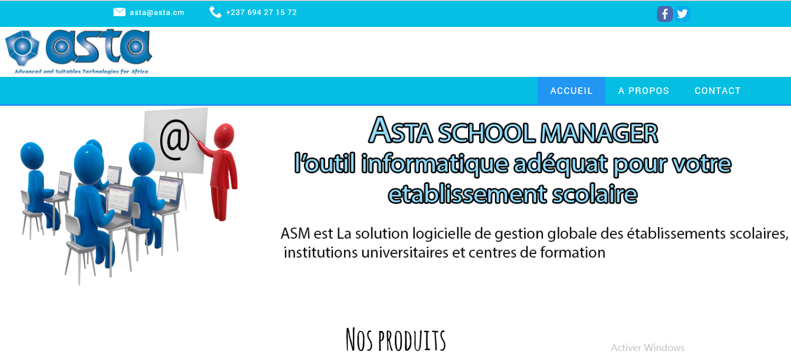

Analyste Programmeur / Developpeur web
Je developpe des sites web sur mesure ,j'ecris egalement des logiciels de gestion.Actuellement je developpe la magnifique application mobile OuiCare chez ASTA Cameroun Voir mes travaux
Mes Travaux récents
Asta.cm
Asta.cm est le site vitrine de la startup Camerounaise ASTA Cameroun..specialiste du developpement web et d'applications mobiles. visitez